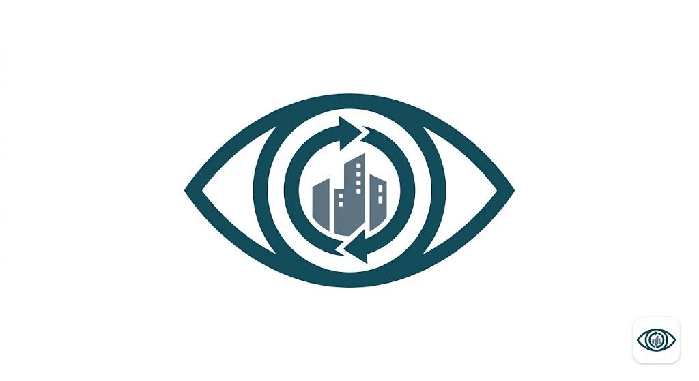

VIGÍACiudad Valles, S.L.P.Conoce, participa y comparte tu experiencia sobre el servicio de recolección de residuos urbanos en tu colonia.
Participar en encuestaVIGÍA (Vigilancia Ciudadana de Residuos Urbanos) es un proyecto orientado a recopilar información y opiniones de los habitantes de Ciudad Valles sobre el servicio de recolección de residuos urbanos.
Mediante encuestas ciudadanas, buscamos identificar las colonias donde existen irregularidades en la recolección, conocer la frecuencia con la que pasa el camión recolector y detectar las principales necesidades de la población.
La información recopilada permitirá generar estadísticas que ayuden a visualizar la situación del servicio en las diferentes colonias de Ciudad Valles.